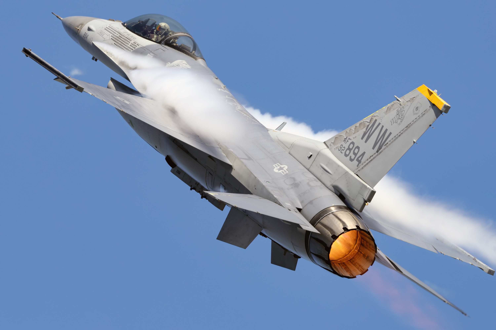

F-16 Fighting Falcon
The F-16 Fighting Falcon is an American multirole fighter jet made by General Dynamics. It was the chosen prototype out of the LWF (Light Weight Fighter) program, the other option was the Yf-17 which would later have massive changes and beomce the Navy's F-18. During a highspeed test on a runway the test pilot wasn't used to the new joystick on the F-16 so to save the plane from crashing took off. This making the F-16's first flight on January 20th 1974. Although this the F-16 wasn't put into operational service until October 1st 1980.
 Wikimedia Commons{kind=link}
Specifications
General specifications
Primary function: Multirole fighter
Contractor: Lockheed Martin Corp.
Engine: Pratt and Whitney F-100-PW-200/220/229 (/'s are for different models) or General Electric F110-GE-100/129
Thrust: ~27,000 pounds of thrust.
Wingspan: 9.8 meters
Length: 14.8 meters
Height: 4.8 meters
Weight: 8,936km without fuel or weapons
Speed: Mach 2 (2469km/h) at high altitude
Range: 3221km at low weight
Max Service Ceiling: Above 15km (50,000 ft)
Armament: Single M61A1 20mm multibarrelled with 500 rounds in storage, along with up to six conventional air to air missiles, air to surface missiles, or any array of bombs.
Crew: 1 or 2 depending on the model
Unit cost: F-16A/B $14.6 Million USD F-16C/D $18.8 Million USD
Entered Service: January 1979
Alternate Owners: South Korea, Belgium, Egypt, Netherlands, Greece, Pakistan, Israel, Turkey, Denmark, Jordan, Poland, Taiwan, Ukraine, Iraq, Morrocco, Norway, Romania, Argentina, Bahrain, and Slovakia
Amount Created: Over 4,600
Stories
F-16’s First Flight:
Phil Oestricher was completing a high speed taxi test where they were supposed to accelerate up to 240km/h on the runway and then stop. This was to test the prototype airframe but whilst accelerating Phil was unable to get the plane under control causing the plane to start veering off the runway on its side. In a snap decision Phil lifted up the nose and took off for its first accidental flight on January 20 1974. This unexpected flight happened due to the new features on the aircraft that the test pilot wasn’t used and lucky got it back to safety after a six minute flight. A video of the occurrence is here.
F-16 Dodges 6 SAMs:
On January 19, 1991, during the start of Operation Desert Storm, F‑16 pilot Major Emmett “Stroke 3” Tullia flew over heavily defended Baghdad to strike an oil refinery. After hitting the target, he was met with a barrage of six Iraqi surface-to-air missiles (SAMs). Despite his flares and chaff failing to deploy, Tullia used intense high‑G maneuvers, sharp turns, barrel rolls, dives to dodge each one. At one point he even heard a missile’s motor roaring as it zipped by. For around seven stressful minutes he wriggled through the missile onslaught purely through flying skill, not countermeasures, and managed to return safely, earning him the Distinguished Flying Cross. You can see the video of this here.